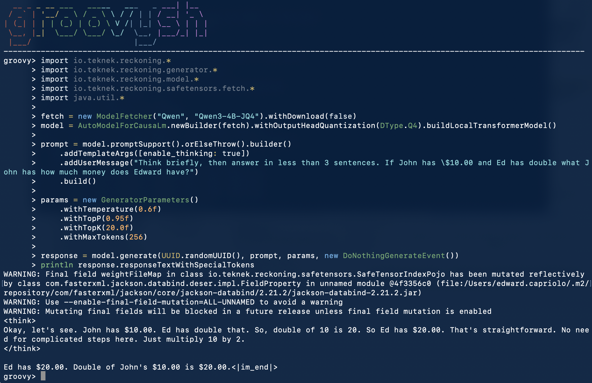

Run run_gplus.sh
Clone or open the Vibrant Maven Plugin module, then run:
./run_gplus.shThe script starts the Maven Groovy shell with the Reckoning runtime and native settings. The screenshot below shows the shell importing the Java APIs, loading a model, building a prompt, and printing a response.

Use the Java APIs interactively
groovy> import io.teknek.reckoning.*